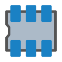
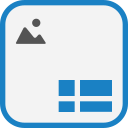

Features — everything the app does.
0.8 is the current release of the real KiCad 10.0.1 on iPad. This page lists the app's features as they ship — every item is part of the build and verified in the shipped binary by the release gates; the features the device passes have confirmed are stated as device facts on the pages where they belong.
The editors
Every tool in the project manager's launcher opens as its own real window — KiCad's own modules, shown with KiCad's own icons.
Project Manager
The home window: project files tree, recent projects, and the launcher for every editor. Projects live in the app's shared Documents folder.
Schematic Editor
Full schematic capture on the Cairo software canvas — it opens and draws on device. Pinch zoom, two-finger pan, ERC, hierarchy, the complete stock symbol libraries.
PCB Editor
Board layout with the complete stock footprint libraries — placement, routing, zones, DRC, and the same gesture and keyboard support as the schematic side.
Symbol Editor
Create and edit schematic symbols and libraries.

Footprint Editor
Create and edit PCB footprints and libraries.
CvPcb
Assign footprints to symbols from the bundled libraries.
Gerber Viewer
Inspect Gerber and drill output before fabrication.
PCB Calculator
Track widths, via sizes, electrical spacings, and the rest of the board-design calculators.

Drawing Sheet Editor
Title-block sheets and templates for schematics and boards.
Image Converter
Bitmap2Component: turn images into schematic symbols and PCB footprints.
Display & input
Titlebar window controls
Every window and dialog carries a titlebar strip — title left, Cursor and Ext toggles, Minimize and Close right — as real window chrome. Drag the strip and the window follows; a maximised window un-maximises and comes with the drag.
Full screen, desktop scale, every window fits
Windows open maximised and fill the display at desktop-monitor scale — the interface at 150% of the panel's raw pixel grid — and every window is clamped to the live geometry of its display — asked from the display at runtime, never hardcoded — so Close and OK buttons stay reachable. A dialog's titlebar strip never resizes the dialog, so its buttons stay inside the window on every open.
Setup dialogs open on a real page, live and responsive
Board Setup and Schematic Setup select their first page as they open — no waiting on a queued event — so Board Setup lands on its Layers page, ready to use. Quasi-modal dialogs (Board Setup and the editors' property dialogs) open fully enabled: the dialog is detached from its parent frame's widget before it is shown, so the frame being disabled for the modal session no longer greys the dialog itself — and the dialog is shown and raised before the parent is disabled at all, so it opens in front. Chooser frames launched from inside a dialog detach from that dialog on the same principle.
Chooser panes keep their proportions
Splitter positions are validated against the dialog's final size after every restore, and a saved position that arrives collapsed or pinned to an edge — including one banked by an older build on an upgraded install — resets to the intended split on first open instead of being clamped to the narrowest allowed column. The symbol and footprint choosers re-check their layout and re-display their previews shortly after opening and after each selection, so the choosers open with their tree, details and both preview panes at usable widths.
Dialogs clear the status bar
Every top-level window and dialog is clamped into its display's safe area, read from the device at runtime: the top row of a dialog — the choosers' filter field included — sits below the system status bar, visible and tappable, on every screen, and an external display, which reports no inset, is unaffected.
An app-wide audit behind it
Every dialog's modal path and every persisted layout value in the app stands audited: the fields-table dialogs, the Plugin and Content Manager, the design-block chooser, the simulator and the symbol/footprint viewers all validate their splitter positions against live sizes, oversized AUI pane sizes are clamped to the window they land in, and "open externally" controls name the file's path when iOS refuses the launch instead of doing nothing.
The footprint chooser opens from every dialog
The chooser no longer builds a desktop-OpenGL 3D preview canvas on iOS — that construction is what crashed the app when the footprint library button was tapped in field properties — and the same OpenGL construction is gone from Footprint Properties' 3D Models page and from the Select 3D Model dialog, whose model lists, file picking and scale/rotation/offset controls work as before. The chooser's 2D preview is untouched.
Field values take the on-screen keyboard
Editing a symbol's value — or any custom field — in the field properties dialog uses a standard text field: tap it and the iOS keyboard rises, type, and OK applies the value, exactly like the dialog's other text boxes. The editor-style text fields behind the text and table-cell properties carry an input-method bridge that raises the keyboard for them and delivers its text as keystrokes.
Pinch zoom & two-finger pan
In the Schematic and PCB editors alike: a pinch zooms at its centre through KiCad's own view machinery, and a two-finger drag pans.
Virtual cursor (option)
A Cursor toggle on every titlebar, off by default and remembered: one finger drives an on-screen arrow trackpad-style, lifting the finger clicks at the arrow, and two-finger gestures pass straight through.
Keyboard & mouse
Full shortcuts (⌘ arrives as the Control modifier KiCad expects), Alt hotkeys with their real key codes, Shift+Tab, keypad Enter, mouse hover and crosshair tracking, right-click menus, and scroll-wheel zoom with pixel deltas.
Smooth window moves
Drag moves are coalesced to the latest position, and canvas resizes land once, at the final size and full quality — moving a window doesn't redraw it a size at a time.
Libraries, Python, and a solid first run
- LibrariesComplete stock libraries, bundled. KiCad 10.0.1's 222 symbol libraries and 155 footprint libraries ship in the app, with 19 project templates and the demo projects; the manager's content schemas ship too.
- PythonKiCad's Python environment, embedded whole. CPython 3.13, the compiled
pcbnewmodule, KiCad's stock scripting plugins and footprint wizards, and two PCM addons — the PCBWay plug-in and the JLCPCB Fabrication Toolkit, each under its own license. - First runA fresh install is a supported path. The manager's status bar is built to survive its own first-run library preload — fields are published whole, and no layout re-enters while the pane set changes. KiCad's first-run wizard runs end to end, exactly as on a fresh desktop install.
- CanvasThe editors never attempt OpenGL. The canvas factory itself returns the Cairo software canvas, so there is no OpenGL failure dialog on any path, in any editor.
Install 0.8
- Download the IPA from the 0.8 release — the same unsigned package is attached to every green Spike workflow run as the
kicad-spike-ipaartifact. - Sideload it with a signer such as Signulous, or your own signing setup.
- Launch KiCad — the first-run wizard walks through setup, and the project manager opens behind it.
Requirements: an M‑series iPad running iPadOS 17 or later. The Install page has the full walkthrough, including where project files live.
Known limitations
- Stated plainlyThe 3D viewer does not work on iOS. It is bound to desktop OpenGL, which iOS does not provide. Its menu action now says so in a message instead of failing, and the 3D previews inside the footprint chooser and Footprint Properties are absent for the same reason. The 2D editors are unaffected.
- Stated plainlyExternal display support is partial. The Ext toggle moves a window to a connected display and fills it at its native size; how much input iPadOS routes to the external window is the open item.
- Stated plainlyngspice codemodels are not bundled, so some simulation device models are unavailable.
The full per-patch ledger — every change to upstream KiCad and wxWidgets, with reasons and verification — is the repository's MODIFICATIONS.md.